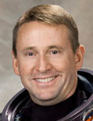

Lyndon B. Johnson Space Center
Houston, Texas 77058
|
National Aeronautics and Space Administration Lyndon B. Johnson Space Center Houston, Texas 77058 |
 |
Biographical Data |
||
Kenneth T. Ham (Captain, USN)
NASA Astronaut (FORMER)
PERSONAL DATA: Born December 12, 1964, in Plainfield, New Jersey. Two children, Ryan and Randy. He is married to the former Michelle Lucas of Hobart, Indiana. His parents, Ed and Marion Ham, reside in Brunswick, Maine. Recreational interests include running, weight lifting, all sports, general aviation, snow and water skiing, sky and scuba diving and sailing.
EDUCATION: Arthur L. Johnson Regional High School, Clark, New Jersey, 1983
B.S., Aerospace Engineering, U.S. Naval Academy, 1987
M.S., Aeronautical Engineering, Naval Postgraduate
School, 1996
ORGANIZATIONS: Society of Experimental Test Pilots, U.S. Naval Academy Alumni Association, Association of Space Explorers
SPECIAL HONORS: Distinguished Graduate, U.S. Naval Test Pilot School
EXPERIENCE: Ham received his commission as an ensign in the United States Navy from the United States Naval Academy in May 1987. He was temporarily assigned to the NASA-JSC Zero-g Office at Ellington Field, Houston, where he flew as a crew member on the NASA zero-g research aircraft. He was designated a Naval Aviator in October 1989 after completing flight training in the T-34C, T-2C and TA-4J aircraft at NAS Corpus Christi and NAS Beeville, Texas. Ham reported to NAS Cecil Field, Florida for F/A-18 training and subsequent operational assignments with the Privateers of VFA-132 and the Gunslingers of VFA-105. He completed two deployments to the Mediterranean Sea, including combat missions over northern Iraq and Bosnia. During these tours, he served as an Air Wing Strike Leader, F/A-18 Demonstration Pilot and Night Vision Goggle Instructor. Ham was selected for the Naval Postgraduate School/Test Pilot School cooperative program, where he studied aeronautical engineering for 18 months in Monterey, California, followed by 12 months of test pilot training at NAS Patuxent River, Maryland. He was selected as a team member of the F/A-18E/F Super Hornet Integrated Test Team as one of five Navy pilots responsible for developing a new fleet of aircraft. This duty involved envelope expansion flight test in arrested landings, catapult assisted takeoffs, weapon separation, propulsion stability, performance and general flying qualities. Ham was serving as the F/A-18E/F lead Carrier Suitability Test Pilot when he was selected for the astronaut program.
He has logged more than 6,000 flight hours in more than 40 different aircraft and has more than 300 shipboard and 300 land-based arrested landings.
NASA EXPERIENCE: Selected by NASA in June 1998, he reported for training in August 1998. His astronaut candidate training included orientation briefings and tours, numerous scientific and technical briefings, intensive instruction in shuttle and International Space Station systems, physiological training and ground school to prepare for T-38 flight training as well as learning water and wilderness survival techniques. Initially assigned as Ascent/Entry, Orbit and station Capsule Communicator (CAPCOM), Ham completed his first spaceflight as pilot on STS-124 and logged more than 13 days in space. He completed his second mission as commander of the STS-132 crew and has logged a total of 25 days, 12 hours, 41 minutes and 9 seconds in space. Subsequently, Ham was assigned to the Aircraft Operations Division as a T-38N instructor pilot and WB-57F research pilot. Ham left the agency in June 2012.
SPACEFLIGHT EXPERIENCE: STS-124 Discovery (May 31 to June 14, 2008) was the 123rd space shuttle flight and the 26th space shuttle flight to the International Space Station. STS-124 was launched from Kennedy Space Center, Florida, and docked with the station on June 2, 2008, to deliver the Japanese Experiment Module-Pressurized Module (JEM-PM) and the Japanese Remote Manipulator System. The STS-124 shuttle astronauts delivered the 37-foot (11-meter) Kibo lab, added its rooftop storage room and performed three spacewalks to maintain the station and prime the new Japanese module’s robotic arm for work during the nine days it was docked at the orbiting laboratory. STS-124 also delivered a new station crew member, Expedition 17 Flight Engineer Greg Chamitoff. He replaced Expedition 16 Flight Engineer Garrett Reisman, who returned to Earth with the STS-124 crew. The STS-124 mission was completed in 218 orbits, traveling 5,735.643 miles in 13 days, 18 hours, 13 minutes and 7 seconds.
STS-132 Atlantis (May 14 to May 26, 2010) was the 132nd space shuttle flight and the 32nd shuttle flight to the International Space Station. STS-132 launched from Kennedy Space Center and docked with the station on May 16, 2010, to deliver Rassvet, a Russian-built Mini Research Module (MRM1) to the station. STS-132 shuttle astronauts performed three spacewalks to install a spare antenna and a stowage platform, replace batteries on the P6 truss that store solar energy and retrieve a power data grapple fixture for installation at a later date. They used Atlantis’ robotic arm to remove Rassvet from the shuttle payload bay and hand it to the station robotic arm, Canadarm2, for installation on the Zarya module. The STS-132 mission was completed in 186 orbits, traveling 4,879,978 miles in 11 days, 18 hours, 28 minutes and 2 seconds.
JUNE 2012
This is the only version available from NASA. Updates must be sought from the above named individual.